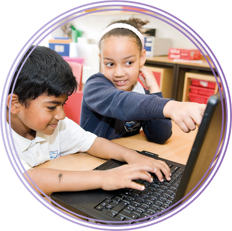
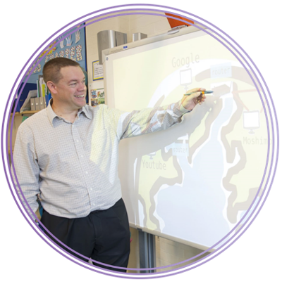

(Basic Books, 1993), p.21.
Learning with Technology (Pearson, 2011).
Teaching
Seymour Papert (1928–) is seen by many as the pioneer of Computing in schools. He is probably best known as the co-developer of the Logo programming language in the late 1960s.
Logo introduced the idea of turtle graphics, in which a computer-controlled robot ‘turtle’, equipped with a pen, moves, turns and draws to make shapes on paper. A child who is programming Logo can define their own ‘words’ (procedures) so, for example, the turtle could be programmed to make a square by giving the command, ‘Move forward and turn 90°’ four times.
Papert saw Logo as more than a programming language, though; he believed it was a powerful tool for pupils to develop their thinking skills.
I began to see how children who had learned to program computers could use very concrete computer models to think about thinking and to learn about learning and in doing so, enhance their powers as psychologists and as epistemologists.20
Insights such as this lie at the heart of the changes in the curriculum from ICT to Computing. Many teachers may recall Logo from their own school days, and Logo was a key influence on Scratch, which was developed by one of Papert’s PhD students.
Inspired by his work with Logo was Papert’s theory of learning: constructionism. Put simply, this is the theory that people learn best through making things for other people.
Learning as ‘building knowledge structures’ . . . happens especially felicitously in a context where the learner is consciously engaged in constructing a public entity.21
Pupils learn more when they write about a topic than when they read about it, especially if they know that you, and perhaps others, will be reading what they write. It seems likely that this is true of every aspect of Computing.
- Pupils will learn computer science far more effectively by writing programs to show to others.
- Pupils will learn to use information technology more effectively if they’re doing something creative, such as making a presentation, website or video, especially if this is to be shown to others.
- Pupils will develop a richer digital literacy if they document what they know and learn for others through blog posts, audio recordings or screencasts.
When teaching the Computing curriculum, look wherever you can for practical, creative projects that pupils can work on, perhaps individually, perhaps with a partner, or as part of a small group: this, after all, is how programming and information technology happens in the ‘real world’ and on most university courses. The projects you set are more likely to be motivating if they’re linked to your pupils’ own interests and enthusiasms. These might be to do with other curriculum areas, the life of the school, or their interests beyond school.
Also, look for an audience for pupils’ work, whether they’re presenting to one another, writing for a public blog, creating software or digital content for younger pupils, or planning to upload their work for others to see, via Scratch or a school YouTube account.


Games can be very motivating, and pupils often enjoy evaluating each other’s work. Remember, though, that such projects are not an end in themselves: the focus should remain on developing knowledge and understanding of Computing through such activities, however engaging they may be. Your role as a teacher extends beyond setting the challenge and providing support in projects, to helping pupils understand the ideas that lie at the heart of the creative work in which they’re engaged, and to helping pupils make the connection between these concepts.
Here are a few examples of projects.
- Making and editing a cookery video in which the algorithm of a recipe is clearly illustrated.
- Creating a video game using characters and settings from a shared reading book.
- Developing educational software for younger pupils to practise mental arithmetic.
- Creating a scripted or stop-motion animation telling the story of an email’s journey from sender to recipient.
- Adding content to the Simple English Wikipedia to explain Computing concepts (or concepts from other topics pupils are studying) to a global audience.
- Developing a micro-site for the school on how to use the web safely, respectfully and responsibly.
Many other ideas for creative projects will suggest themselves, either starting from, or ending with, the programme of study content.
American educationalist David Jonassen22 coined the term ‘meaningful learning’ to describe projects such as these. He identified five essential aspects for learning to be described as ‘meaningful’, and these might help in considering what makes for effective learning in Computing.
Active: Pupils should be actively engaged in their learning – typically this will be doing something on a computer, but it could also be taking part in a discussion or an activity away from the computer, such as role-play to illustrate how packets of data travel across the Internet.
Constructive: This can be understood both in the sense of constructing meaning, developing pupils’ mental model of computation and technologies, and in the sense of making something, whether this is a computer program, a presentation or a blog post.
Intentional: Ideally, pupils should have some degree of choice over how they tackle a task or project, or perhaps even over the task or project itself. It is unlikely they will learn much from copying a worked solution off an IWB (interactive whiteboard) screen, and many projects can be constructed or adapted to allow plenty of scope for individual creativity.
Authentic: Wherever possible, try to link activities with pupils’ own experiences, both within and beyond school: cross-curricular projects work very well, as do those linked to the life of the school itself, or to pupils’ experiences of technology.
Cooperative: Computing, in both industrial and academic contexts, is a collaborative endeavour. Where possible, construct activities so that pupils can work together, supporting one another in their learning.
This is not to say that creative, collaborative projects are the only, or in some circumstances even the best, approaches to teaching Computing. There are many topics where pupils will learn
a lot through classroom discussion, teacher demonstration or watching high-quality media.